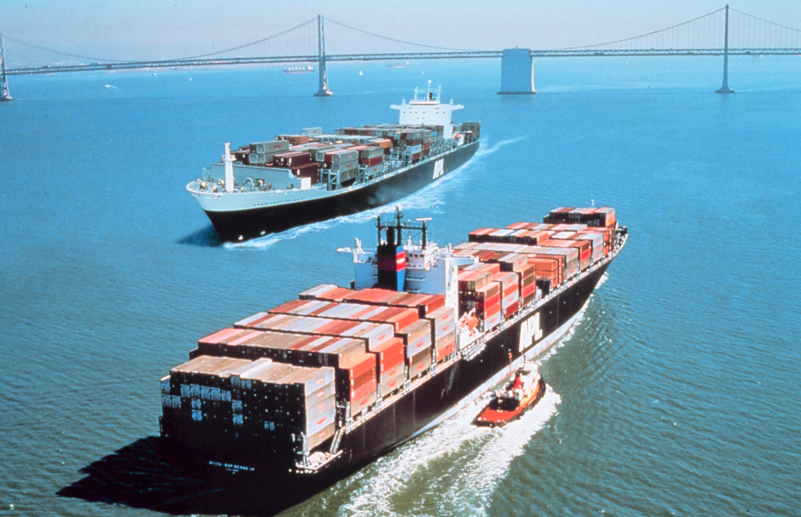
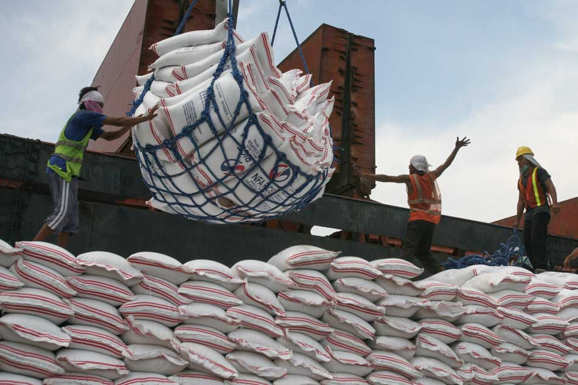

Palitan ng produkto at serbisyo sa pagitan ng mga bansa.Ito ay nagaganap sapagkat walang bansa ang maaaring makatugon sa lahat ng kanyang pangangailangan ng walang tulong mula sa ibang bansa.
- EKSPORT (Pagluluwas): pagpapadala ng mga produkto at serbisyo sa ibang bansa
- IMPORT (Pag-aangkat): pagbili ng kalakal mula sa ibang bansa
- Pagkakaiba ng Teknolohiya
- Pagkakaiba sa Pinagkukunang Yaman
- Pagkakaiba sa Panlasa
- Pagkakaiba sa Halaga ng Produksyon
- Kalagayan ng kabayaran ng pagluluwas (export) at sa pag-aangkat (import).
- Trade Deficit: import > export
- Trade Surplus: import < export
- Mas maraming produkto ang mapagpipilian sa pamilihan.
- Napapataas nito ang kalidad ng mga produkto na nabibili sa pamilihan
- Nagkakaroon ng pagkakaunawaan ang mamamayan ng bansang nakikipagkalakalan.
- Lumalawak ang pamilihan ng mga produkto sa bansa.
- Nagiging palaasa ang mga mamamayan sa produktong imported
- Hindi nalilinang ang pagkamalikhain ng mga mamamayan dahil umaasa na lamang sila sa mga produktong gawa sa ibang bansa
- Pagkawala ng sariling pagkakakilanlan bunga ng pagpasok ng dayuhang kultura sa lipunan